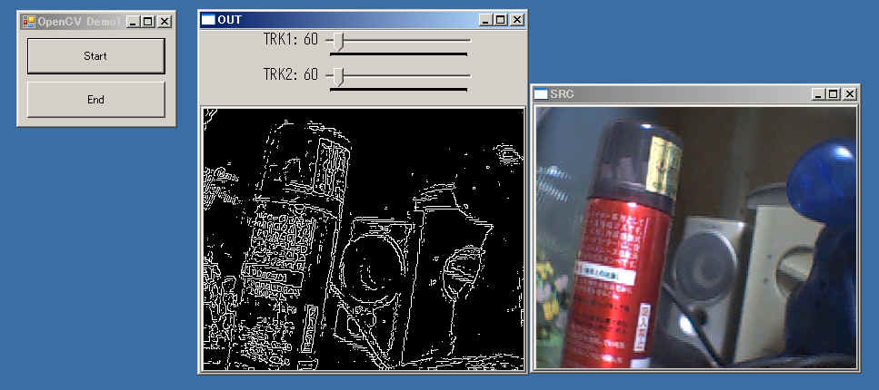

サンプルプログラムを元にVB(VB2005)からのOpenCVの使い方を説明します。
全ソースは下記からダウンロードできます。
OpenCVDemo1.lzh

このサンプルプログラムは、
接続されているカメラの画像をSRCウィンドウに表示し、輪郭線の映像をOUTウィンドウに表示します。
OUTウィンドウ上部にある二つのパラメタで輪郭線抽出時のしきい値を変更できます。
Startボタン押下で動作を開始し、Endボタン押下で終了します。
API定義以外の全コードは下記になります。
Option Explicit On
Option Strict On
Imports System.Runtime.InteropServices
Imports OpenCVDemo1.Cv
Imports OpenCVDemo1.CvTypes
Imports OpenCVDemo1.CxCore
Imports OpenCVDemo1.CxTypes
Imports OpenCVDemo1.HighGUI
Public Class Form1
'定数定義
Private Const SRCIMAGEWINDOW As String = "SRC" 'ソース画像ウィンドウの名称
Private Const OUTIMAGEWINDOW As String = "OUT" '出力画像ウィンドウの名称
Private Const THRESHOLDTRACKBAR1 As String = "TRK1" 'しきい値用トラックバーの名称
Private Const THRESHOLDTRACKBAR2 As String = "TRK2" 'しきい値用トラックバーの名称
'メンバ変数
Private mIsRunning As Boolean '現在動作中か？
Private mThreshold1 As Integer 'しきい値
Private mThreshold2 As Integer 'しきい値
'----------------------------------------------------------
'Startボタン押下時
Private Sub Btn_Start_Click(ByVal sender As System.Object, ByVal e As System.EventArgs) Handles Btn_Start.Click
'状態チェック
If mIsRunning Then Exit Sub
'準備
mThreshold1 = 30 'しきい値１の初期値
mThreshold2 = 90 'しきい値２の初期値
'ウィンドウの準備
cvNamedWindow(SRCIMAGEWINDOW, CV_WINDOW_AUTOSIZE) 'カメライメージウィンドウ作成
cvNamedWindow(OUTIMAGEWINDOW, CV_WINDOW_AUTOSIZE) '出力イメージウィンドウ
cvCreateTrackbar(THRESHOLDTRACKBAR1, OUTIMAGEWINDOW, IntPtr.Zero, 1000, AddressOf CallbackTrackbar1) 'しきい値１用トラックバー作成
cvCreateTrackbar(THRESHOLDTRACKBAR2, OUTIMAGEWINDOW, IntPtr.Zero, 1000, AddressOf CallbackTrackbar2) 'しきい値２用トラックバー作成
cvSetTrackbarPos(THRESHOLDTRACKBAR1, OUTIMAGEWINDOW, mThreshold1) '初期値設定
cvSetTrackbarPos(THRESHOLDTRACKBAR2, OUTIMAGEWINDOW, mThreshold2) '初期値設定
'キャプチャソースの準備
Dim cap As IntPtr
cap = cvCreateCameraCapture(0) '0番のデバイス、つまり最初に見つかるデバイスを使用
If cap = IntPtr.Zero Then
MsgBox("カメラ等が接続されていないか、使用できません。")
Exit Sub
End If
'画像サイズ取得
Dim srcimg As IntPtr = cvQueryFrame(cap) '１フレーム取得
Dim srcimgdata As IplImage = CType(Marshal.PtrToStructure(srcimg, GetType(IplImage)), IplImage) '構造体にコピー
Dim sz As New CvSize(srcimgdata.width, srcimgdata.height) 'サイズを取得
'ワーク用イメージ準備
Dim gryimg As IntPtr = cvCreateImage(sz, IPL_DEPTH_8U, 1) 'グレースケールイメージ
Dim outimg As IntPtr = cvCreateImage(sz, IPL_DEPTH_8U, 1) '出力イメージ
'入力と出力のデータ格納方式をあわせる(上下反転対策)
Dim outimgdata As IplImage = CType(Marshal.PtrToStructure(outimg, GetType(IplImage)), IplImage) '構造体にコピー
outimgdata.origin = srcimgdata.origin 'データ順をあわせる
Marshal.StructureToPtr(outimgdata, outimg, True) 'アンマネージ領域にコピー
'ループ
mIsRunning = True
Do While mIsRunning
'キャプチャデバイスからイメージ取得
srcimg = cvQueryFrame(cap)
'出力画像作成
cvCvtColor(srcimg, gryimg, CV_BGR2GRAY) 'カラーからグレーに変換
cvCanny(gryimg, outimg, mThreshold1, mThreshold2, 3) '輪郭線抽出
'描画
cvShowImage(SRCIMAGEWINDOW, srcimg)
cvShowImage(OUTIMAGEWINDOW, outimg)
Application.DoEvents()
Loop
'キャプチャソースの破棄
cvReleaseCapture(cap)
'イメージの破棄
cvReleaseImage(gryimg)
cvReleaseImage(outimg)
'ウィンドウの破棄
cvDestroyWindow(SRCIMAGEWINDOW)
cvDestroyWindow(OUTIMAGEWINDOW)
End Sub
'終了ボタン押下時
Private Sub Btn_End_Click(ByVal sender As System.Object, ByVal e As System.EventArgs) Handles Btn_End.Click
'ループ用フラグのクリア
mIsRunning = False
End Sub
'フォームを閉じる時
Private Sub Form1_FormClosing(ByVal sender As Object, ByVal e As System.Windows.Forms.FormClosingEventArgs) Handles Me.FormClosing
If mIsRunning Then
MsgBox("Endボタンで終了させて下さい。")
e.Cancel = True
End If
End Sub
'----------------------------------------------------------
'しきい値用トラックバー動作時のコールバック関数
Private Sub CallbackTrackbar1(ByVal Pos As Integer)
mThreshold1 = Pos 'しきい値１の値を退避
End Sub
Private Sub CallbackTrackbar2(ByVal Pos As Integer)
mThreshold2 = Pos 'しきい値２の値を退避
End Sub
Private Sub Form1_Load(ByVal sender As System.Object, ByVal e As System.EventArgs) Handles MyBase.Load
End Sub
End Class
|
◎API定義
VBからOpenCVを使う場合、OpenCVインストールフォルダ下のbinフォルダにあるDLLを呼び出して使います。
（前ページで案内しているものがインストールされているとして話を進めます）
VBからアンマネージのDLLを呼び出すためにはDeclare文やDllImport属性を使った定義が必要になります。
その都度定義してもいいのですが毎回同じなので私はまとめて定義したモジュールを用意して使ってます。
上でダウンロードできるアーカイブ中にある「OpenCVDefine.vb」がそのモジュールです。
OpenCVを使うプログラムを作ってみたいという方はこのモジュールファイルを
メニュー[プロジェクト]-[既存項目の追加]でご自身のプロジェクトに追加して使ってください。
ただし、この定義集はOpenCVのヘッダファイルから機械的に生成したものです。
よって動作確認をとっていない関数があります。
っていうか動作を確認した関数の方が極々一部です(^^;
間違いを見つけた場合は教えて頂けるとうれしいです。
またこのソースはOpenCVのソースを元に機械的に作成しているのでOpenCVのライセンスに従う事になるかもしれません。
OpenCVのライセンス事項を見る限り商用利用も可能で組み込んだもののソースを公開する義務もありませんが、
著作権に関する情報の提示が必要かもしれません。使われる場合は各自確認して下さい。
実はVB6でもOpenCVのネタをやろうと思ってたのですが、問題があってやってませんでした。
それはOpenCVのAPIの呼び出し規則が「_cdecl」であるためで、
通常のAPIのようにVB6から呼び出すと問題が発生していたんです。
VB6は_stdcallでの呼び出し規則にしか対応しておらず、
_stdcallでは呼び出し先つまりAPI内でスタックを戻しますが、_cdeclでは呼び出し元がスタックを戻さなければなりません。
やっとVB.Netからは_cdeclでの呼び出しも可能となったため素直に直接呼び出すことが可能になったのでした。
◎インポート
| Option
Explicit On Option Strict On Imports System.Runtime.InteropServices Imports OpenCVDemo1.Cv Imports OpenCVDemo1.CvTypes Imports OpenCVDemo1.CxCore Imports OpenCVDemo1.CxTypes Imports OpenCVDemo1.HighGUI |
Imports文にて
アンマネージ領域とのやり取りを行うための機能が定義されている
System.Runtime.InteropServicesと
OpenCVのAPIや定数等が定義されているOpenCVDefine.vb中の
各クラスをインポートします。
◎定数とメンバ変数定義
| Public
Class Form1 '定数定義 Private Const SRCIMAGEWINDOW As String = "SRC" 'ソース画像ウィンドウの名称 Private Const OUTIMAGEWINDOW As String = "OUT" '出力画像ウィンドウの名称 Private Const THRESHOLDTRACKBAR1 As String = "TRK1" 'しきい値用トラックバーの名称 Private Const THRESHOLDTRACKBAR2 As String = "TRK2" 'しきい値用トラックバーの名称 'メンバ変数 Private mIsRunning As Boolean '現在動作中か？ Private mThreshold1 As Integer 'しきい値 Private mThreshold2 As Integer 'しきい値 |
定数はソース(入力)画像と出力画像を表示するウィンドウの名称としきい値を変更するためのトラックバー(スライドバー)の名称です。
OpenCVにはウィンドウやトラックバーなどのコントロールがありますが、Windowsのそれらのとは扱い方が異なり、
どのウィンドウか？どのトラックバーか？の指定はハンドル等ではなく「名称」で行います。
何箇所も出てくるので定数として定義しています。
メンバ変数については以後の説明の中で説明していきます。
◎Startボタン押下時(メインループ準備)
| '---------------------------------------------------------- 'Startボタン押下時 Private Sub Btn_Start_Click(ByVal sender As System.Object, ByVal e As System.EventArgs) Handles Btn_Start.Click '状態チェック If mIsRunning Then Exit Sub '準備 mThreshold1 = 30 'しきい値１の初期値 mThreshold2 = 90 'しきい値２の初期値 'ウィンドウの準備 cvNamedWindow(SRCIMAGEWINDOW, CV_WINDOW_AUTOSIZE) 'カメライメージウィンドウ作成 cvNamedWindow(OUTIMAGEWINDOW, CV_WINDOW_AUTOSIZE) '出力イメージウィンドウ cvCreateTrackbar(THRESHOLDTRACKBAR1, OUTIMAGEWINDOW, IntPtr.Zero, 1000, AddressOf CallbackTrackbar1) 'しきい値１用トラックバー作成 cvCreateTrackbar(THRESHOLDTRACKBAR2, OUTIMAGEWINDOW, IntPtr.Zero, 1000, AddressOf CallbackTrackbar2) 'しきい値２用トラックバー作成 |
入力画像と出力画像を表示する為のウィンドウを作成します。
ウィンドウ自体はcvNamedWindowに名前を指定するだけで作ってくれます。
第２引数にCV_WINDOW_AUTOSIZEを指定した場合、
中に表示した画像に合わせてウィンドウサイズを自動的に調整してくれます。
出力画像ウィンドウ(OUTIMAGEWINDOW)には、
しきい値変更用の二つのトラックバーを作成します。
トラックバーはcvCreateTrackbarで作成します。
cvCreateTrackbarの引数
第１引数：トラックバーの名前
第２引数：ウィンドウの名称（このウィンドウ上に作成されます）
第３引数：値が格納される領域のポインタ
第４引数：最大数
第５引数：変更されたときに呼び出されるCvTrackbarCallback型のデリゲート関数
第１引数、第２引数、及び、第４引数は説明の必要はないでしょう。
第３引数はちゃんと説明すると長くなのではしょりますが、
トラックバーの値が変わったときに自動的に値を更新してくれる領域のポインタを指定します。
アンマネージ領域のアドレスを指定しなければならないので面倒ですから今回は使いませんでした。
第５引数にはトラックバーを変更させたときに呼び出してもらいたい関数のアドレスを指定します。
このサンプルではCallbackTrackbar1/CallbackTrackbar2という関数がそれになります。
| '---------------------------------------------------------- 'しきい値用トラックバー動作時のコールバック関数 Private Sub CallbackTrackbar1(ByVal Pos As Integer) mThreshold1 = Pos 'しきい値１の値を退避 End Sub Private Sub CallbackTrackbar2(ByVal Pos As Integer) mThreshold2 = Pos 'しきい値２の値を退避 End Sub |
この関数は引数を一つ持ち、その値が現在のトラックバーの値になります。
各関数ではそれぞれメンバ変数に格納しています。
これで、mThreshold1/mThreshold2にはそれぞれのトラックバーの値が格納されます。
|
cvSetTrackbarPos(THRESHOLDTRACKBAR1, OUTIMAGEWINDOW,
mThreshold1) '初期値設定 cvSetTrackbarPos(THRESHOLDTRACKBAR2, OUTIMAGEWINDOW, mThreshold2) '初期値設定 |
cvSetTrackbarPosはトラックバーの値を設定する関数です。
トラックバーとウィンドウの名称、そして設定したい値を引数に呼び出します。
|
'キャプチャソースの準備 Dim cap As IntPtr cap = cvCreateCameraCapture(0) '0番のデバイス、つまり最初に見つかるデバイスを使用 If cap = IntPtr.Zero Then MsgBox("カメラ等が接続されていないか、使用できません。") Exit Sub End If |
OpenCVではカメラからの入力などもしてくれます。
機能が限定されている分、DirectShowよりも格段に楽に静止画を取得でき、
基本的な流れとしては
cvCreateCameraCaptureでカメラキャプチャを作成
cvQueryFrameで現在のフレームを取得
（画面に表示したり、各種変換を行ったり）
cvReleaseCaptureで解放
となります。
cvCreateCameraCaptureの引数はデバイス番号で0を指定すれば最初に見つかったカメラを使用します。
|
'画像サイズ取得 Dim srcimg As IntPtr = cvQueryFrame(cap) '１フレーム取得 Dim srcimgdata As IplImage = CType(Marshal.PtrToStructure(srcimg, GetType(IplImage)), IplImage) '構造体にコピー Dim sz As New CvSize(srcimgdata.width, srcimgdata.height) 'サイズを取得 |
ここでは画像のサイズを取得しています。
cvCreateCameraCaptureで取得したハンドルを引数にcvQueryFrameを呼び出し
現在のフレームを取得します。
そのイメージデータ(IplImage)からサイズを取得しています。(変数szに格納されます)
OpenCVでは画像をIplImage型データとして扱います。
イメージ(IplImage型)には画像のビットデータの他にサイズなども含まれます。
（このページではIplImage型データの事を「イメージ」と呼んでます。
また目に見える映像そのもの(ビットマップ)は「画像」と呼んで区別しています。
つまり「イメージ」といったらビットマップデータ＋サイズ等の情報だと思ってください。）
画像処理をメインに考えたい場合は不要かもしれませんが、
VB(VB2005)でOpenCVを使う上で理解しておいた方がよいことを補足説明しておきます。
cvQueryFrameは戻り値としてIplImage型データのポインタ(アンマネージ領域のアドレス)を返します。
そのままでは使い難いので、PtrToStructureメソッドを用いて
マネージ領域のIplImage型領域(変数srcimgdata)にコピーしています。
このとき構造体の各項目毎にマーシャリング(要は変換)をしてくれます。
これによりsrcimgdataの各メンバを見る事でIplImage型データにアクセスできる訳です。
|
'ワーク用イメージ準備 Dim gryimg As IntPtr = cvCreateImage(sz, IPL_DEPTH_8U, 1) 'グレースケールイメージ Dim outimg As IntPtr = cvCreateImage(sz, IPL_DEPTH_8U, 1) '出力イメージ |
画像変換するときに使用する作業用のイメージ(IplImage型データ)を作成しています。
イメージはcvCreateImageで作成します。
cvCreateImageの引数
第１引数：サイズ（CvSize型）
第２引数：画像のビット深度
第３引数：チャンネル数
第１引数には上で取得したサイズ情報(カメラ画像のサイズ)を指定します。
第２引数のビット深度には符号なし8ビットを表すIPL_DEPTH_8Uを指定しています。(普通はこれで十分かと)
第３引数のチャンネル数には、グレースケール画像の場合は１、カラーの場合は３を指定します。
cvCreateImageはアンマネージ領域にIplImage型データを準備し、そのポインタを返します。
ここでは単にポインタとして扱うのでIntPtr型変数に入れてます。
gryimgは入力画像をグレースケールに変換したイメージが格納され
outimgは出力画像(輪郭線)が格納されます。
|
'入力と出力のデータ格納方式をあわせる(上下反転対策) Dim outimgdata As IplImage = CType(Marshal.PtrToStructure(outimg, GetType(IplImage)), IplImage) '構造体にコピー outimgdata.origin = srcimgdata.origin 'データ順をあわせる Marshal.StructureToPtr(outimgdata, outimg, True) 'アンマネージ領域にコピー |
イメージの格納方法にはいくつかの種類があります。
通常扱うのは画像の上から格納するやり方(トップダウン)と下から格納するやり方(ボトムアップ)です。
(たぶん歴史的な理由により)カメラからの取得したイメージは通常ボトムアップで、
cvCreateImageで作成したイメージはトップダウンです。
このままだと上下が逆さまになってしまうので、出力用入力画像の形式にあわせています。
ここでも画像サイズ取得と同様に
アンマネージ領域のデータ(outimg)をマネージ領域(outimgdata)にコピー(PtrToStructure)し、
格納方式を表すoriginを変更した後、
今度はマネージ領域(outimgdata)からアンマネージ領域(outimg)にコピー(StructureToPtr)しています。
面倒ですが.Net Frameworkの仕様上どうしようもありません。（たぶん）
以上で動作するための準備は完了です。
◎メインループ
|
'ループ mIsRunning = True Do While mIsRunning 'キャプチャデバイスからイメージ取得 srcimg = cvQueryFrame(cap) '出力画像作成 cvCvtColor(srcimg, gryimg, CV_BGR2GRAY) 'カラーからグレーに変換 cvCanny(gryimg, outimg, mThreshold1, mThreshold2, 3) '輪郭線抽出 '描画 cvShowImage(SRCIMAGEWINDOW, srcimg) cvShowImage(OUTIMAGEWINDOW, outimg) Application.DoEvents() Loop |
メインループはこれだけです。
メインループはmIsRunningがTrueの間だけループします。
mIsRunningはEndボタン押下時にFalseに設定されます。
流れとしては、
cvQueryFrameで現在のフレームをソース画像として取得
cvCvtColorでソース画像をグレースケール画像に変換
グレースケール画像からcvCannyで輪郭線を抽出し出力画像に保存
SRCウィンドウにソース画像、OUTウィンドウに出力画像を描画
Windowsのイベント処理
となります。
cvCvtColorは画像形式の変換を行います。
第１引数のイメージを第２引数のイメージに第３引数のルールで変換し転送します。
第３引数のルールには、下記のようなものがあります。
CV_BGR2GRAY BGR形式からグレースケール
CV_GRAY2BGR グレースケールからBGR形式
CV_RGB2YCrCb RGB形式からYCrCb形式
CV_BGR2HSV RGB形式からHSV形式
CV_RGB2BGR565 RGB形式(24ビット)からBGR565形式(16ビット)
チャンネル数を変えるもの、カラー空間を変えるもの、ビット深度を変えるもの、など様々な変換をサポートしています。
cvCannyはCanny法と呼ばれるアルゴリズムを使って
グレースケール画像からエッジ部分(輪郭線)を抽出する関数です。
cvCannyの引数
第１引数：元イメージ（グレースケール）
第２引数：出力先イメージ
第３引数：しきい値１
第４引数：しきい値２
第５引数：ソーベルオペレータ用パラメタ
Canny法というのは、まず二つのしきい値(第３引数及び第４引数)を使ってエッジを得て
弱いエッジ(第４引数)は強いエッジ(第３引数)に結合している場合のみ有効とする
というアルゴリズムでエッジを決定する方法です。
第５引数はエッジ検出でソーベルオペレーションを行うときのパラメタになります。
第５引数には 3,5,7 のいずれかを指定できます。
cvShowImageはイメージを指定したウィンドウに描画します。
今回のウィンドウはCV_WINDOW_AUTOSIZEを指定して作成しているのでサイズは自動的に調整してくれます。
|
'キャプチャソースの破棄 cvReleaseCapture(cap) 'イメージの破棄 cvReleaseImage(gryimg) cvReleaseImage(outimg) 'ウィンドウの破棄 cvDestroyWindow(SRCIMAGEWINDOW) cvDestroyWindow(OUTIMAGEWINDOW) |
キャプチャソースとウィンドウの破棄を行っています。
OpenCVは速度優先なところがあるせいか、破棄等を忘れるとあっという間にメモリを使い果たし重重になるときがありますので気をつけましょう。
なおcvQueryFrameで取得したイメージsrcimgは破棄してはいけません。
システムで使いまわしている領域なので、破棄はシステムに任せます。
以上がVB(VB2005)からOpenCVを使う一例になります。
このサンプルはOpenCVのユーザインタフェースを積極的に使ってます。
OpenCVで提供しているウィンドウ表示やスライダがそれになります。
一応VBフォームを使ってますが、単にサンプルを見やすくする為だけのものです。
このやり方は移植性が高く環境に左右されない方式ですが、
そもそもVBのしかも.Net Framework上から使おうという場合ははっきり言って無意味だと思います。
スライダやウィンドウなどはVB(.Net Framework)のそれを使った方がよりスマートなのではないでしょうか(^^;
カメラからの静止画取り込みなどはOpenCVを使った方が楽ですけどね。(その代わり細かい制御はできません)
OpenCVのUIをあまり使わず、VBのフォーム等を積極的に使ったサンプルは「サンプル２(矩形検出)」を参考にして下さい。